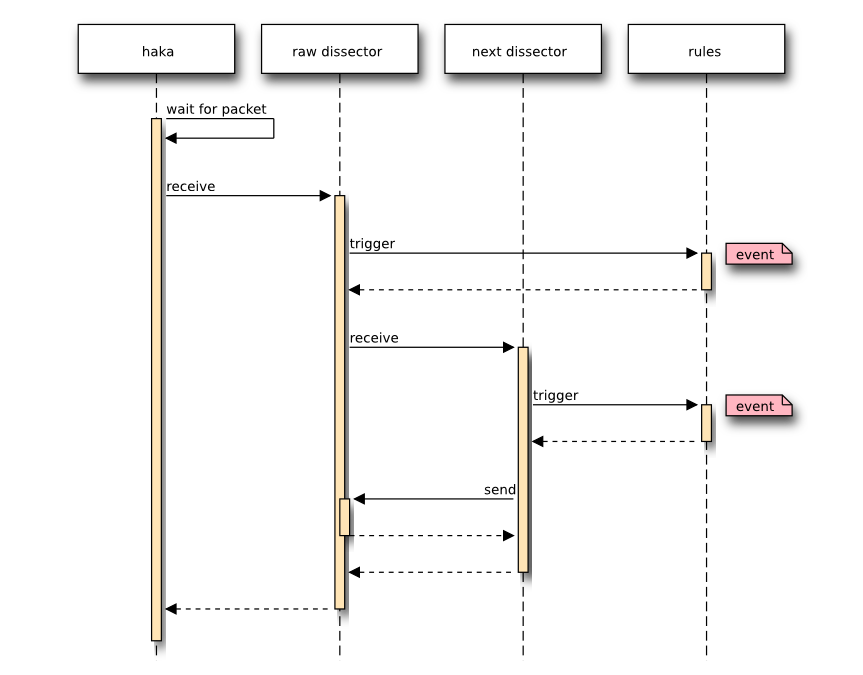
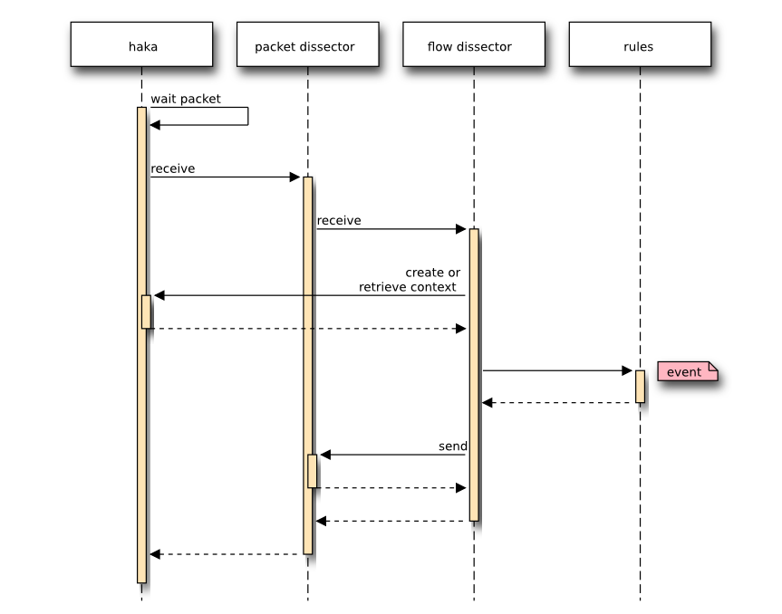

2. Haka architecture¶

2.2. Flow¶
The flows that go on the network and through Haka are named using the following conventions:

- Up/Down: Direction of the flow from the client to the server.
- In/Out: Direction of the flow regarding the Haka router.
2.3. Packet capture and filtering¶
Haka will call the capture module and wait for an incoming packet. Once a packet is received, it is filtered by calling the dissectors and the rules setup by the user in the configuration file. At some point, one dissector will accept/drop the packet to make it continue/stop its journey on the network.

2.4. Packet dissectors¶
Haka threads will wait for the capture module to receive a packet. When one is available, the module will pass it to the correct dissector.
The next image shows the work-flow of a received packet.
The same process is also true for the comunication between one dissector and the next dissector. By calling the receive function, the ownership is given to the called dissector. This means that the packet will never be send on the network unless this dissector accept the packet.
2.5. Flow and context¶
When a flow need to be created (for TCP or UDP for instance), a context need to be created by the dissector that do the transition from state-less to state-full.
